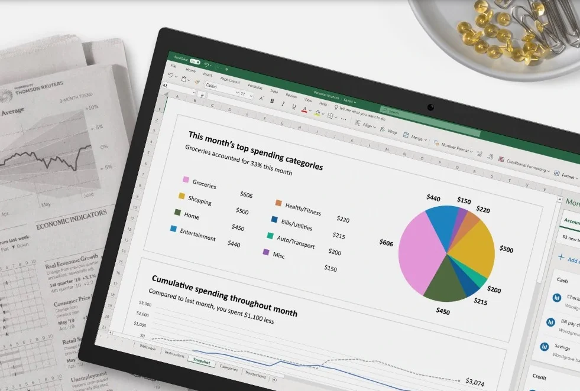
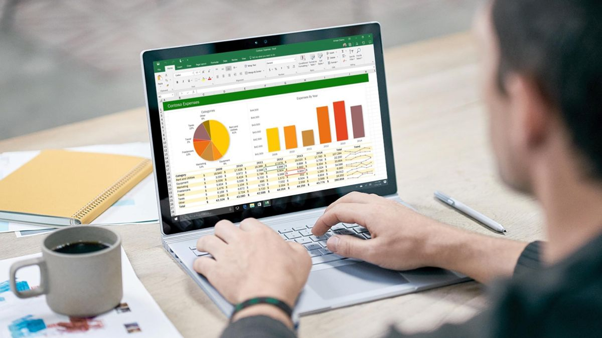

Microsoft Excel (также иногда называется Microsoft Office Excel) — программа для работы с электронными таблицами, созданная корпорацией Microsoft для Microsoft Windows, Windows NT и Mac OS, а также Android, iOS и Windows Phone. Она предоставляет возможности экономико-статистических расчетов, графические инструменты и, за исключением Excel 2008 под Mac OS X, язык макропрограммирования VBA (Visual Basic for Application). Microsoft Excel входит в состав Microsoft Office.
История Microsoft Excel
В 1982 году Microsoft запустила на рынок свой первый электронный табличный процессор Multiplan, который был очень популярен на CP/M системах, но на MS-DOS системах он уступал Lotus 1-2-3. Первая версия Excel предназначалась для Mac и была выпущена в 1985 году, а первая версия для Windows была выпущена в ноябре 1987 года. Lotus не торопилась выпускать 1-2-3 под Windows, и Excel с 1988 года начала обходить по продажам 1-2-3, что в конечном итоге помогло Microsoft достичь позиций ведущего разработчика программного обеспечения. Microsoft укрепляла своё преимущество с выпуском каждой новой версии, что имело место примерно каждые два года. Текущая версия для платформы Windows — Excel 19, также известная как Microsoft Office Excel 2019. Текущая версия для платформы macOS — Microsoft Excel 2019.

В начале своего пути Excel стал причиной иска о товарном знаке от другой компании, уже продававшей пакет программ под названием «Excel». В результате спора Microsoft была обязана использовать название «Microsoft Excel» во всех своих официальных пресс-релизах и юридических документах. Однако со временем эта практика была позабыта, и Microsoft окончательно устранила проблему, приобретя товарный знак другой программы. Microsoft также решила использовать буквы XL как сокращённое название программы: иконка Windows-программы состоит из стилизованного изображения этих двух букв, а расширение файлов по умолчанию в Excel — .xls. В сравнении с первыми табличными процессорами Excel представляет множество новых функций пользовательского интерфейса, но суть остается прежней: как и в программе-родоначальнике, VisiCalc, организованные в строки и столбцы клетки-ячейки могут содержать данные или формулы с относительными или абсолютными ссылками на другие клетки.
В сравнении с первыми табличными процессорами Excel представляет множество новых функций пользовательского интерфейса, но суть остается прежней: как и в программе-родоначальнике, VisiCalc, организованные в строки и столбцы клетки-ячейки могут содержать данные или формулы с относительными или абсолютными ссылками на другие клетки.
Excel был первым табличным процессором, позволявшим пользователю менять внешний вид таблицы на экране: шрифты, символы и внешний вид ячеек. Он также первым представил метод умного пересчёта ячеек — обновления только ячеек, зависящих от изменённых ячеек: раньше табличные процессоры пересчитывали все ячейки; это делалось либо после каждого изменения (что на больших таблицах долго), либо по команде пользователя (что могло вводить пользователя в заблуждение не пересчитанными значениями).

Будучи впервые объединёнными в Microsoft Office в 1993 году, Microsoft Word и Microsoft PowerPoint получили новый графический интерфейс для соответствия Excel, главного стимула модернизации ПК в то время.
Начиная с 1993 года, в состав Excel входит Visual Basic для приложений (VBA), язык программирования, основанный на Visual Basic, позволяющий автоматизировать задачи Excel. VBA является мощным дополнением к приложению и в более поздних версиях Excel доступна полнофункциональная интегрированная среда разработки. Можно создать VBA-код, повторяющий действия пользователя и таким образом автоматизировать простые задачи. VBA позволяет создавать формы для общения с пользователем. Язык поддерживает использование (но не создание) DLL от ActiveX; более поздние версии позволяют использовать элементы объектно-ориентированного программирования.
Функциональность VBA делала Excel легкой мишенью для макровирусов. И это было серьёзной проблемой до тех пор, пока антивирусные продукты не научились обнаруживать их. Фирма Microsoft, с опозданием приняв меры для уменьшения риска, добавила возможность выбора режима безопасности: